Field guide¶
This guide provides detailed information about the different types of variable sources along with examples of bogus variability.
Proceed here to interactively inspect the taxonomy tree we are employing in SCoPe. Please refer to arXiv:2102.11304 for more details on the taxonomy.
Variable stars (vnv)¶
Variable stars are objects whose brightness is varying at a statistically significant level. ZTF has statistical measurements depend on magnitude: down to ~10 millimagnitudes for bright stars and >0.1 mag for objects near the detection limit. Many astrophysical objects exhibit variable behavior, including periodic variables such as eclipsing binaries, pulsators, etc, and non-periodic variables such as AGN and YSOs.
Classification and numbers¶
Subtypes
Irregular
Flaring
Periodic
Dipping
Long Time Scale
ZTF light curves¶
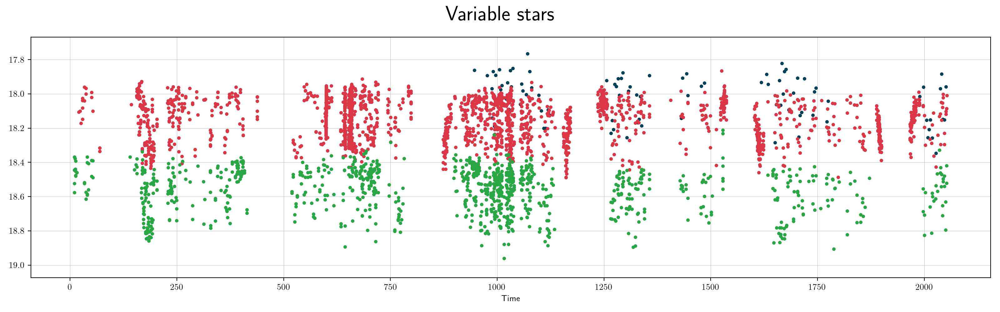
Description¶
Most stars are likely to be variable at some level. Therefore, variable is defined to be those varying at a statistically varying level, with millimagnitude to magnitude level variations.
Light curve characteristics¶
amplitude: varies from survey precision to more than a magnitude

References and further reading:¶
Jayasinghe et al., 2018, MNRAS 447 3, The ASAS-SN catalogue of variable stars I: The Serendipitous Survey arxiv:1803.01001
Periodic Variables (pnp)¶
Periodic Variables are objects that exhibit repeating sequences of values over a fixed length of time, known as the period. Many astrophysical objects exhibit periodic behavior, including eclipsing binaries, pulsators, etc.
Classification and numbers¶
Supertypes
variable
Subtypes
Eclipsing
Sinusoidal
Sawtooth
Elliptical
ZTF light curves¶
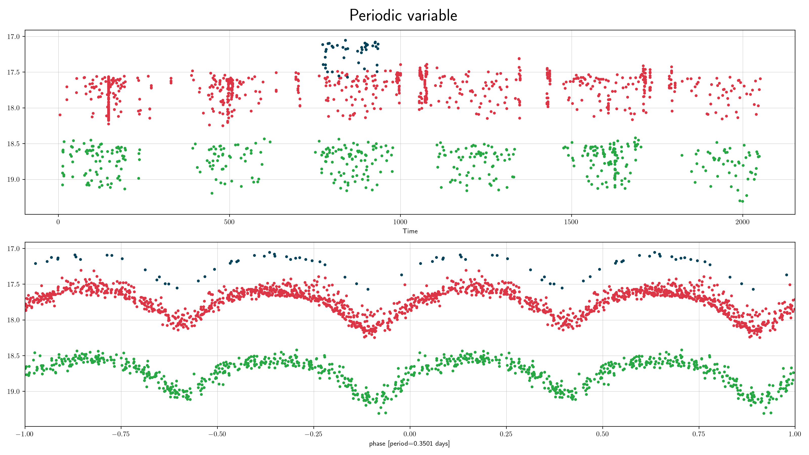
Description¶
Periodic variables have periods ranging from minutes to over a thousand days with millimagnitude to magnitude level variations.
Light curve characteristics¶
periodic variable: objects that exhibit repeating sequences of values over a fixed length of time
period range: 0.001-1000 days
amplitude: varies from survey precision to more than a magnitude
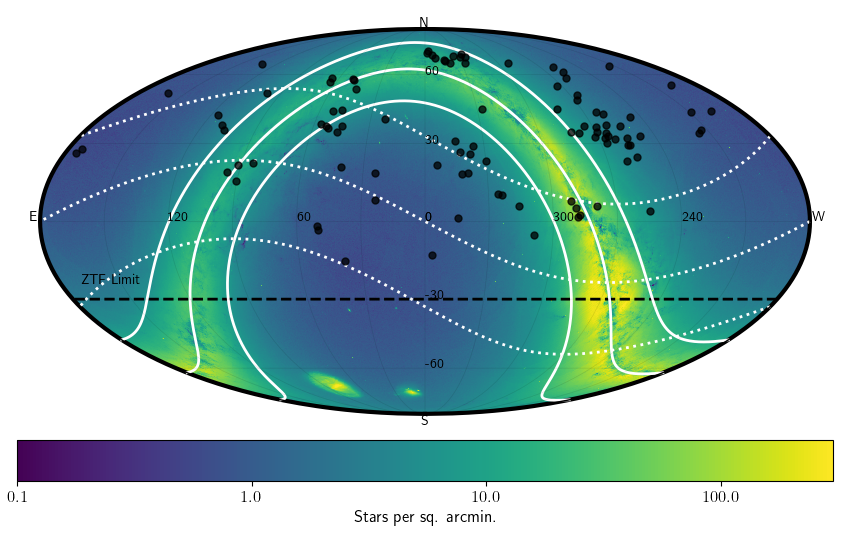
References and further reading:¶
Drake et al., 2014, ApJS 618 213 9, The Catalina Surveys Periodic Variable Catalog arxiv:1405.4290
RR Lyrae (rrlyr)¶
RR Lyrae are pulsating horizontal branch dA/dF stars with a mass 0.5 of Solar masses.
They are part of the main ‘instability strip’ in the HR-diagram,
where stars pulsate due to the double ionisation of He.
The two main subtypes are ab and c,
Classification and numbers¶
Supertypes
variable
periodic
pulsator
Subtypes
RR Lyrae ab
RR Lyrae c
Occurrence rate: very common, about 105 expected in ZTF data
ZTF light curves¶
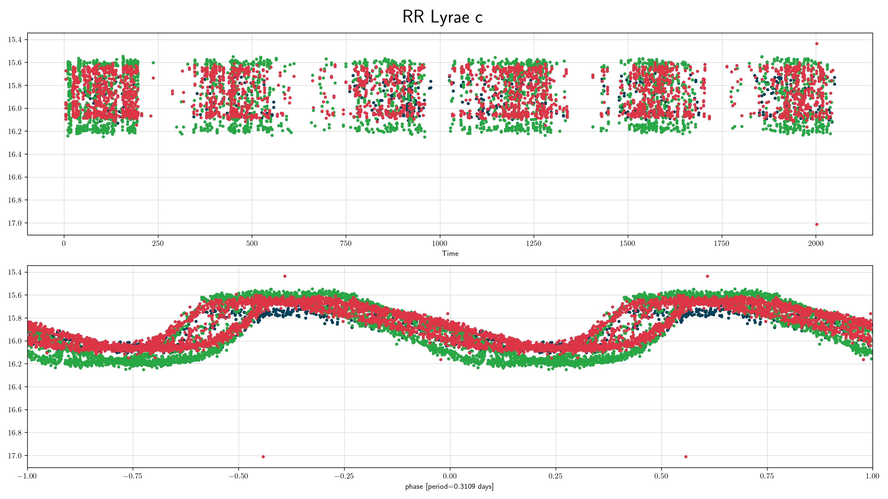
Description¶
RR Lyrae (ab) are easy to recognise by their distinctive light curve shape and high amplitude variability. RR Lyrae (c) are a bit more of a challenge since their light curve shape is more sinusoidal. For low-SNR cases they can sometimes be confused with contact binaries (EW), which occur at similar periods and have sinusoidal-like light curves.
Light curve characteristics¶
periodic variable
period range: 0.2-1 days
amplitude: up to 1 mag (subtype ab), or 0.5 mag (subtype c)
light curve shape:
sawtooth; steep rise and slow decay (subtype ab)
periodic sinusoidal (subtype c)
can show modulation of the light curve shape on timescales of ~100 days (Blazhko effect)
Other characteristics and selection methods¶
intrinsic RR Lyrae colors: blue, that of A/F type main sequence stars (g-r = -0.1 – 0.5). Reddening can be significant since these stars can be detected at large distances.
absolute magnitude: -1<G<1
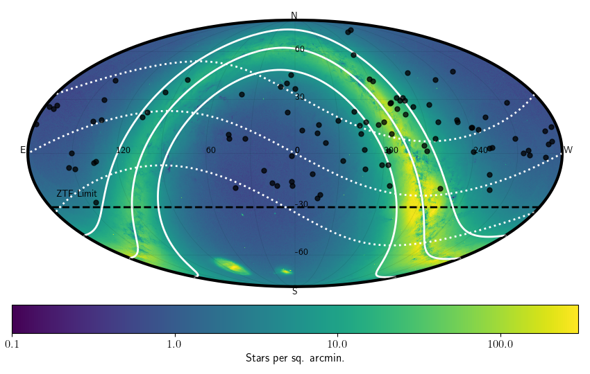
References and further reading:¶
Sterken & Jasschek: Light curves of variable stars
W Uma (wuma)¶
W UMa stars are main-sequence overcontact binaries. In overcontact binaries both stars are too large for their Roche lobe share a common envelope and can exchange mass and energy. The mass-ratio of the system ranges from 1 to 10 in extreme cases. Components can have different raddii and surface brightness with temperatures ranging from 4000 to 9000K.
Classification and numbers¶
Supertypes
variable
periodic
binary
eclipsing
Occurrence rate: very common, about 105 expected in ZTF data
ZTF light curves¶

Description¶
Contact binary lightcurves show a distinctive shape that shows two eclipses which do smoothly transition over. Eclipses can have a flat bottom. The eclipse depth is often identical, but can be show slightly different depths. In rare cases there can be differences in the maxima of the lightcurves (e.g. due to starspots).
Light curve characteristics¶
periodic variable
period range: 0.22-0.8 days
amplitude: up to 0.75 mag
light curve shape: EW, two ‘V’-shaped eclipses with smooth transitions
eclipses often equal depth, within 0.1mag
Other characteristics and selection methods¶
g-r = -0.1 – 1.0. Short period systems are typically redder.
absolute magnitudes are similar to main-sequence stars


References and further reading:¶
Sterken & Jasschek: Light curves of variable stars
Marsh et al, MNRAS 465, 4678–4689, 2017
Delta Scuti (dscu)¶
Delta Scuti variables are classic pulsating stars (i.e., they are stars passing through the instability strip). As these stars expand and contract (i.e. pulsate) their size and temperature changes leading to regular, smooth variations in their brightness. Delta Scuti stars are smaller than both Cepheids and RR Lyrae stars, which leads to a short period of oscillations (typically anywhere between 0.03 days and 0.3 days).
Classification and numbers¶
Supertypes
variable
periodic
pulsator
Occurrence rate: very common, about 104 expected in ZTF data
ZTF light curves¶
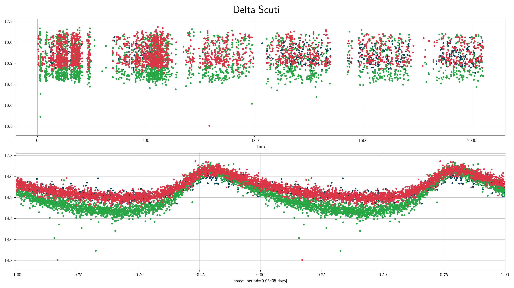
Description¶
Delta Scuti are easy to recognise by their distinctive light curve shape and period range, which distinguishes them from RR Lyrae and Cepheids.
Light curve characteristics¶
periodic variable
period range: 0.03-0.3 days
amplitude: Small amplitude (between 0.05 and 0.3)
light curve shape:
smooth, sawtooth variations (blue/green filters show stronger sawtooth pattern); steep rise and slow decay
Other characteristics and selection methods¶
intrinsic Delta Scuti colors: blue, that of A/F type main sequence stars (g-r = -0.1 – 0.5). Reddening can be significant since these stars can be detected at large distances.
absolute magnitude: 0<G<5

References and further reading:¶
Sterken & Jasschek: Light curves of variable stars
Classical Cepheids (ceph)¶
Classical Cepheids are young, bright (100-10,000 solar luminosities) supergiant stars that pulsate with periods of 1 to 100 days (typically several days). They are located in the main instability strip in the H-R diagram. Cepheids follow a famous pulsation period-luminosity relation, allowing the absolute magnitude of a Cepheid, and thus its distance, to be inferred from the pulsation period. Thus, Cepheids are used to measure distances to nearby galaxies.
Classification and numbers¶
Supertypes
variable
periodic
pulsator
Occurrence rate: rare, about 103 expected in ZTF data, mostly in the Galactic plane and in M31
ZTF light curves¶

 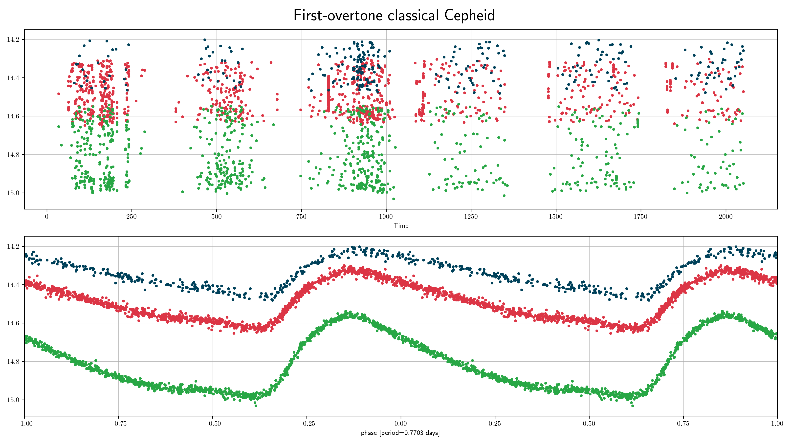
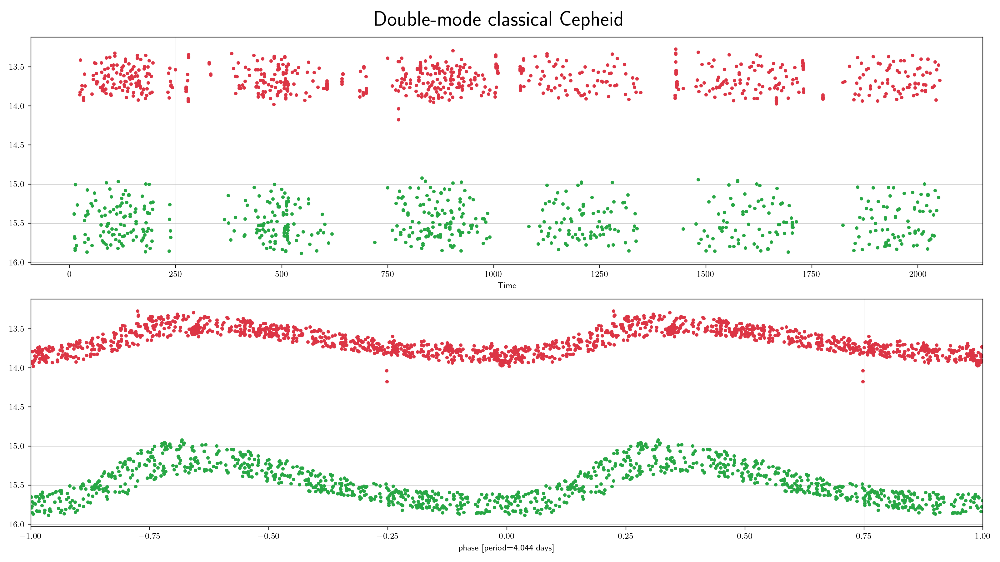
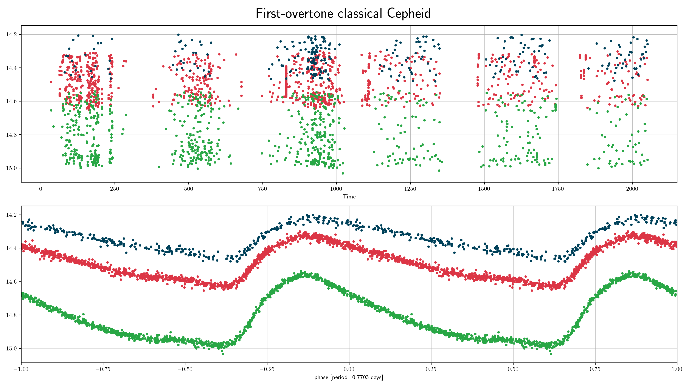
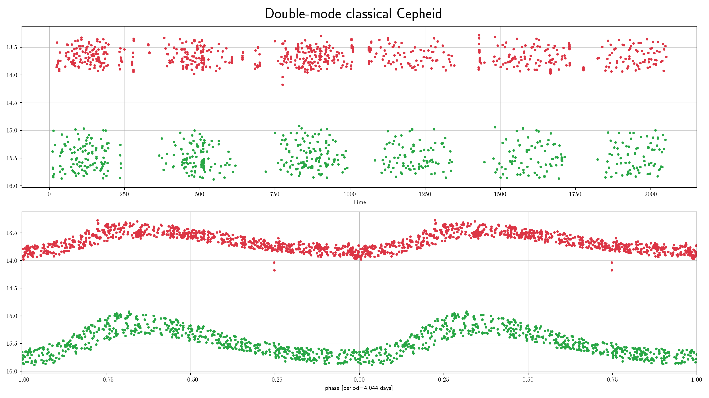
Description¶
Fundamental-mode Cepheids are easy to recognise by their distinctive sawtooth light curve shape (with a rapid rise to maximum light and a slower decline) and period range (from 1 to 100 days). A secondary bump may be seen in the light curves of some Cepheids with periods in the range 6-20 days. Cepheids pulsating in the first overtone have lower amplitudes and more symmetric light curves than fundamental-mode Cepheids. Their periods (in the Milky Way) range from 0.24 to 8 days. The lower period limit is arbitrary since there is no natural boundary between first-overtone Cepheids and delta Scuti stars. Some Cepheids pulsate both in the fundamental mode and first overtone, the period ratio ranges from 0.68 to 0.77.
Light curve characteristics¶
periodic variable
period range: 1-100 days (fundamental-mode pulsators), 0.24-8 days (first-overtone pulsators)
amplitude: moderate amplitude (~0.3 to 0.8 mag)
light curve shape:
smooth, sawtooth variations (blue/green filters show stronger sawtooth pattern); steep rise and slow decay
Classical Cepheids with pulsation periods 6-20 days may have a secondary bump
Other characteristics and selection methods¶
intrinsic Cepheids colors: Bp-Rp = 0.8 – 2.0 mag, but as these stars are located near the Galactic plane, the reddening may be significant
absolute magnitude: -6<G<-2
located close to the Galactic plane (within ~10 degrees)


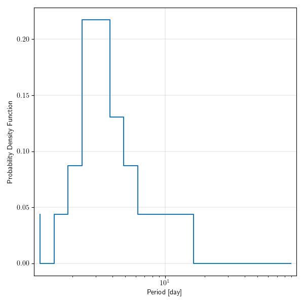
References and further reading:¶
Soszynski, I. et al. (2008) The Optical Gravitational Lensing Experiment. The OGLE-III Catalog of Variable Stars. I. Classical Cepheids in the Large Magellanic Cloud
Udalski, A. et al. (2018) OGLE Collection of Galactic Cepheids
Rimoldini, L. et al. (2019) Gaia Data Release 2. All-sky classification of high-amplitude pulsating stars
Skowron, D. et al. (2020) A three-dimensional map of the Milky Way using classical Cepheid variable stars
Cataclysmic Variables (cv)¶
Cataclysmic variables are close binaries with active mass transfer from a late type main sequence star or brown dwarf to a white dwarf. There are several different types of CVs, depending on their causes of variability. These include novae (which have 9-15 mag outbursts from thermonuclear events on the white dwarf surface), dwarf novae which have 2-9 mag outbursts on weeks to decades timescales due to disk instabilities) and novalikes which do not have outbursts but have high and low states of accretion which cause several magnitudes of brightness change.
Classification and numbers¶
Supertypes
variable
aperiodic outbursts
aperiodic high and low states
periodic orbital variability
Subtypes
Nova
U Gem dwarf nova
Z Cam dwarf nova
SU UMa/WZ Sge dwarf nova
Novalike
Occurrence rate: common, several thousand expected in ZTF data
ZTF light curves¶
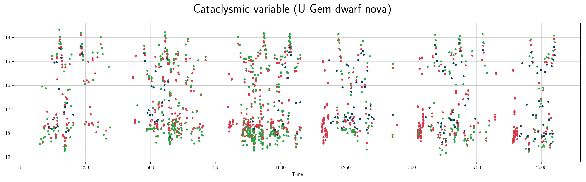
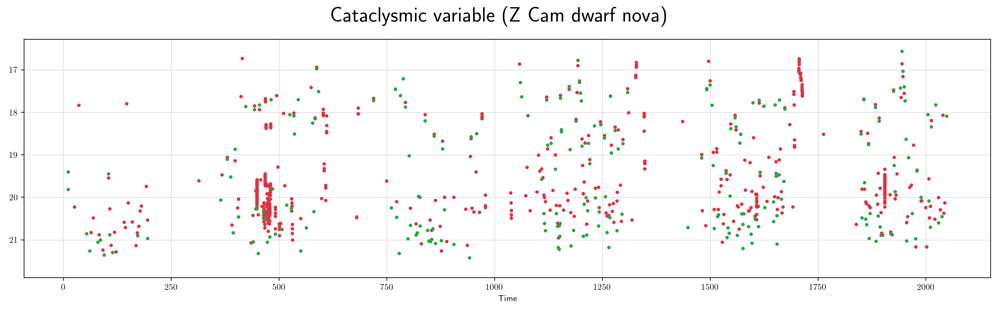


Description¶
CVs are easy to recognize by their distinctive light curve shape, colors and high amplitude variability. The outbursts are non-periodic. They can sometimes be confused with supernovae, flare stars or long period variables.
Light curve characteristics¶
non-periodic variable but recur on some timescale
outburst timescale range: days to decades
amplitude: 9-15 mag (nova), 2-9 mag (dwarf nova), 1-4 mag (novalike)
light curve shape:
sawtooth; steep rise and slow decay (subtype nova)
symmetrical to slightly sawtooth (subtype U Gem)
standstills about 1 mag below outburst level for weeks (subtype Z Cam)
fast rise and extended plateau for 1-2 weeks followed by steeper decline (subtype SU UMa/WZ Sge)
extended (days-weeks) states at either high or low brightness
can show periodic modulation of the light curve on orbital timescales of hours
Other characteristics and selection methods¶
intrinsic CV colors: blue, (g-r < 0.6). Reddening is usually not important except for places in the galactic plane.
absolute magnitude at quiescence: 8<G<14

References and further reading:¶
Warner 1995: Cataclysmic Variable Stars
Flaring variables (fla)¶
The phenomelogical classification of flaring is any kind of outbursting source, where a variable star (or binary system) dramatically increases in brightness for minutes to hours before returning to quiescence. Most flare stars are red dwarfs, while RS Canum Venaticorum variables (RS CVn) are also known to flare due to a companion star in the binary system. Other possible sources of flaring include dwarf novae, which arise from accretion disk activity in a cataclysmic variable star.
Classification and numbers¶
Supertypes
variable
Occurrence rate: very common, for a given red dwarf, flares 10³¹ - 10³² ergs occur about once per day, and flares 10³³ - 10³⁴ ergs occur about once per 10-100 days.
ZTF light curves¶

Description¶
Flaring stars are easy to recognise by their increase in brightness from quiescent levels, rapidly returning to that same level shortly thereafter.
Light curve characteristics¶
variable
increase in brightness before returning to quiescence.
amplitude: at the bright end, flares can be many magnitudes, while at the dim end, flare detection is limited by survey photometric precision.


References and further reading:¶
Taichi Kato, WZ Sge-type dwarf novae, Publications of the Astronomical Society of Japan, Volume 67, Issue 6, December 2015, 108 arxiv:1507.07659
Maximilian N. Günther et al 2020 AJ 159 60, arxiv:1901.00443
Beta Lyr (blyr)¶
Semi-detached eclipsing binaries (also called beta Lyrae variables) are binary star systems (i.e. two stars that are in orbit around each other) that are aligned such that they eclipse each other relative to our line of sight from the Earth. Unlike detached EBs, semi-detatched systems are so close to each other that the shape of (at least one of) the stars in the system are distorted, giving rise to the smooth periodic variations even when the system is not eclipsing.
Classification and numbers¶
Supertypes
variable
periodic
binary
eclipsing
Occurrence rate: very common, about 105 expected in ZTF data
ZTF light curves¶
Description¶
Any type of star can be in an eclipsing binary (so they may be small, large, hot, cool, etc.), which in turn can lead to a large range in eclipse amplitudes (though typically these are between 0.1 and ~1 mag, with most in the ~0.3 to 0.75 mag range) or eclipse periods (though our observations are typically only sensitive to periods between 0.1 to ~20 days).
Light curve characteristics¶
periodic variable
Range of amplitudes (~0.2 to >1 mag)
Intermediate periods (log Period between -0.5 and 1.4)
light curve shape: EB, round or sinusoidal light curves, with imposed “V-shape” dips in the phase folded light curve

References and further reading:¶
Sterken & Jasschek: Light curves of variable stars
Long Period Variables (lpv)¶
Long Period Variables have periods over several tens of days. They incorporate various groups of cool luminous pulsators. The canonical example is Mira.
Classification and numbers¶
Supertypes
variable
periodic
pulsator
Subtypes
Miras
Semiregulars
OSARGs - OGLE Small Amplitude Red Giants (some astronomers do not include these under LPVs)
Occurrence rate: very common, about 105 expected in ZTF data
Non LPV wth Long Periods
RV Tau - Cepheid IIs
Other possible confusions
YSOs - their variations tend to be over shorter periods
ZTF light curves¶
 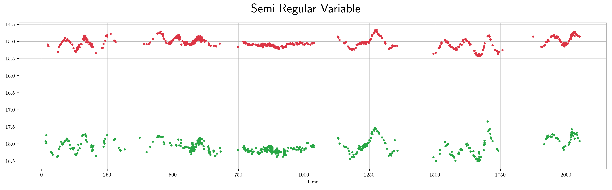
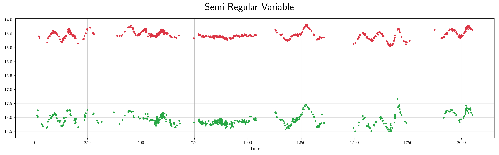
Description¶
Long period variables have periods from several tens of days to over thousand day and are easy to identify due to the slow variations.
Light curve characteristics¶
periodic variable
period range: 100-1000 days
amplitude: over a mag (Mira), or a few tenths of a mag to 1 or 2 mags (semiregulars)
light curve shape:
periodic sinusoidal (Mira)
semiregular (Semiregular)
Other characteristics and selection methods¶
intrinsic lpv colors: red
absolute magnitude:


References and further reading:¶
Mowlawi et al., 2018, A&A 618, A58, The first Gaia catalogue of long-period variable candidates arxiv:1805.02035
Soszynski et al., 2009, AcA, 59, 239S, The Optical Gravitational Lensing Experiment. The OGLE-III Catalog of Variable Stars. IV. Long-Period Variables in the Large Magellanic Cloud arxix:0910.1354
Soszynski et al., 2008, AcA, 58, 293S, The Optical Gravitational Lensing Experiment. The OGLE-III Catalog of Variable Stars. II.Type II Cepheids and Anomalous Cepheids in the Large Magellanic Cloud arxiv:0811.3636
Bogus variability (bogus)¶
Not all light curve variability pertains to a source’s intrinsic astrophysical nature. Some is caused by nearby extended objects, bright stars, blends and image artifacts, and being aware of how such bogus light curves appear can help avoid confusion.
ZTF light curves¶
Description¶
The first light curve above demonstrates a saturation ghost artifact, and the second light curve suffers from another kind of artifact. These artifacts were identified and affected data masked after ZTF began, but data from earlier releases were not retroactively masked. This produces the apparent cutoff in variability after a certain point in time.
Light curve characteristics¶
The light curves appear to be “flaring” with departures from the median by multiple magnitudes which suddenly stop in later data. This cutoff corresponds to the time when a new method of processing the data was used to mask affected points.